#1 2408.TW
08-14 12:57 → 08-14 13:05
-1.52%
進場 516.00 停損 501.00 停利 538.00 出場 509.00 MA5 509.80 MA10 507.70 MA20 506.75 MA60 504.28 MA120 506.32 MA200 511.49 5–20 扇開 0.59% 離MA200 0.88% 量比 4.1x
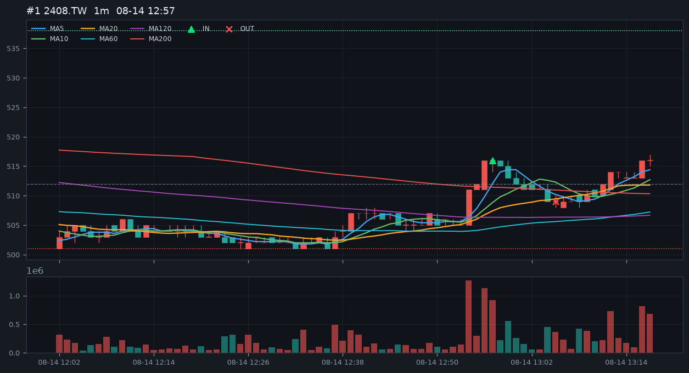
南亞科一分圖同款均線：MA5 / 10 / 20 / 60 / 120 / 200。 盤整短均要黏，進場是 5>10>20 剛扇開、價剛離開 MA200。 436 那種末端多頭不追。K 線紅漲綠跌（台股配色）。近 7 日 Yahoo 一分 K，學習用。
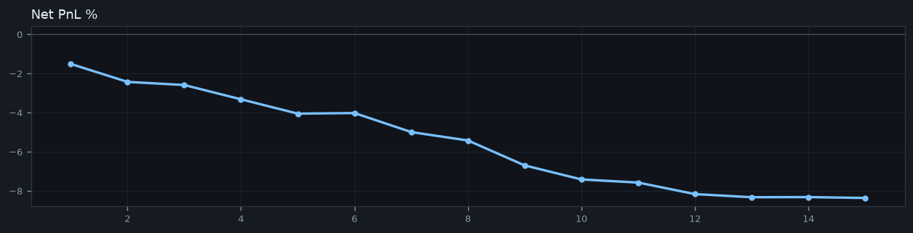
| 代號 | K 數 | 筆數 | 勝率 | 淨損益 |
|---|---|---|---|---|
| 2408.TW | 1855 | 6 | 17% | -4.03% |
| 2344.TW | 1855 | 5 | 0% | -3.55% |
| 2303.TW | 1856 | 1 | 0% | -0.59% |
| 2330.TW | 1856 | 1 | 0% | -0.16% |
| NQ=F | 7814 | 2 | 50% | -0.04% |
進場 516.00 停損 501.00 停利 538.00 出場 509.00 MA5 509.80 MA10 507.70 MA20 506.75 MA60 504.28 MA120 506.32 MA200 511.49 5–20 扇開 0.59% 離MA200 0.88% 量比 4.1x

進場 528.00 停損 517.00 停利 544.00 出場 524.00 MA5 525.40 MA10 523.90 MA20 523.50 MA60 522.35 MA120 522.95 MA200 516.12 5–20 扇開 0.36% 離MA200 2.30% 量比 4.0x
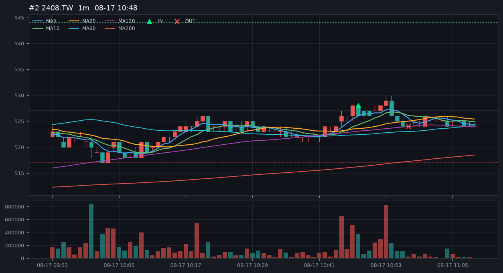
進場 517.00 停損 508.00 停利 530.00 出場 517.00 MA5 514.40 MA10 512.70 MA20 512.00 MA60 512.02 MA120 512.52 MA200 512.22 5–20 扇開 0.46% 離MA200 0.93% 量比 5.4x
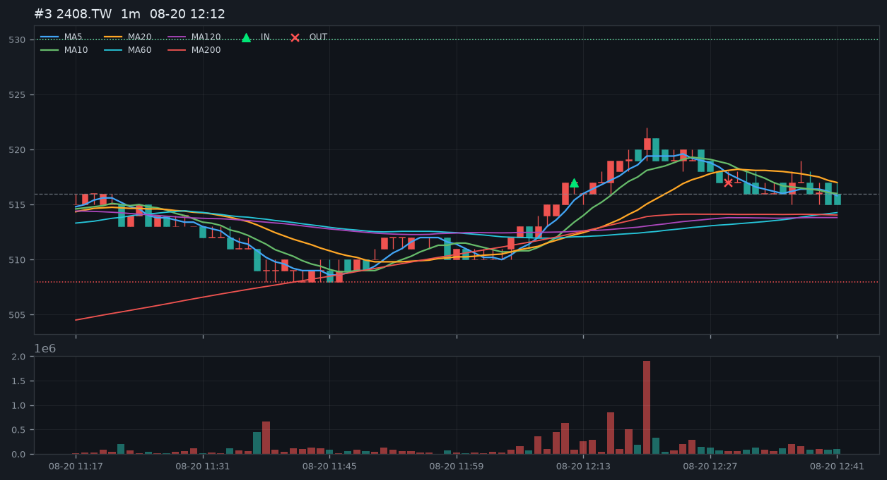
進場 526.00 停損 511.00 停利 548.00 出場 523.00 MA5 521.60 MA10 519.00 MA20 518.25 MA60 516.55 MA120 515.47 MA200 514.59 5–20 扇開 0.64% 離MA200 2.22% 量比 2.5x
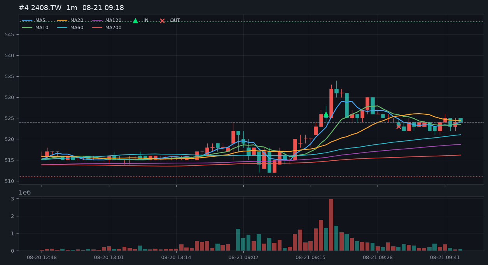
進場 524.00 停損 518.00 停利 533.00 出場 521.00 MA5 522.60 MA10 521.40 MA20 521.30 MA60 520.98 MA120 520.34 MA200 520.36 5–20 扇開 0.25% 離MA200 0.70% 量比 5.9x
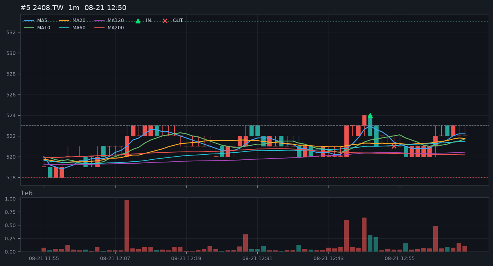
進場 525.00 停損 520.00 停利 532.00 出場 526.00 MA5 522.80 MA10 522.40 MA20 521.90 MA60 521.50 MA120 520.64 MA200 520.09 5–20 扇開 0.17% 離MA200 0.94% 量比 4.0x
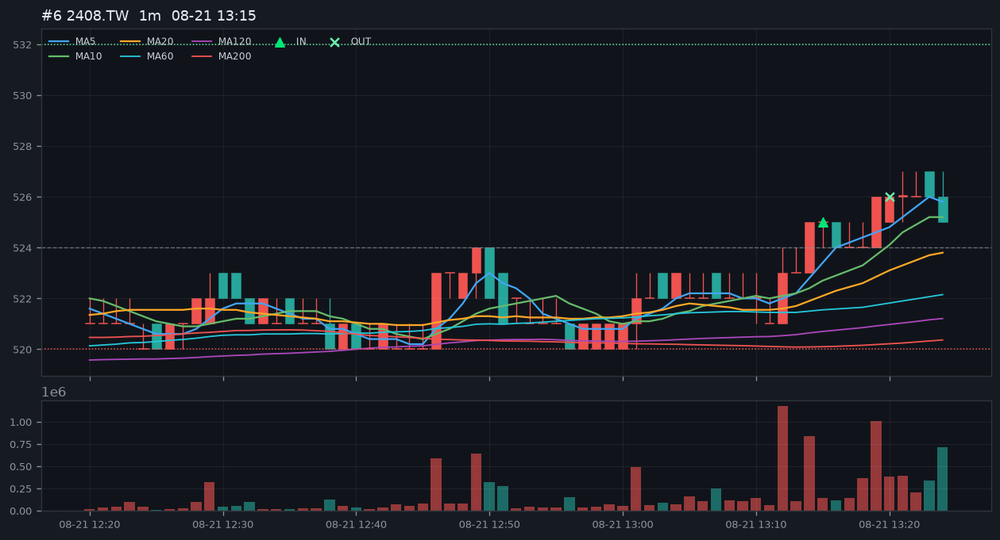
進場 184.50 停損 180.50 停利 190.50 出場 183.00 MA5 183.00 MA10 182.65 MA20 182.47 MA60 181.60 MA120 182.14 MA200 183.68 5–20 扇開 0.28% 離MA200 0.45% 量比 3.3x
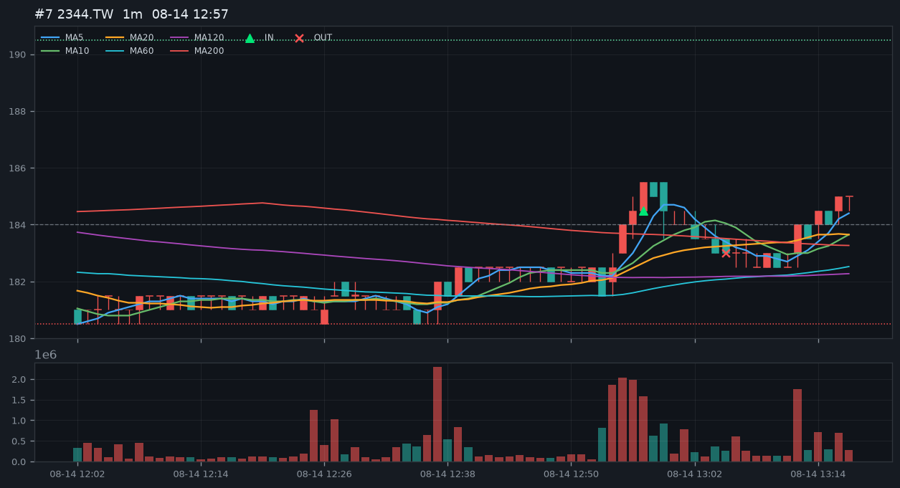
進場 185.00 停損 182.50 停利 189.00 出場 184.50 MA5 184.80 MA10 184.45 MA20 184.28 MA60 184.28 MA120 184.68 MA200 183.66 5–20 扇開 0.28% 離MA200 1.00% 量比 7.7x
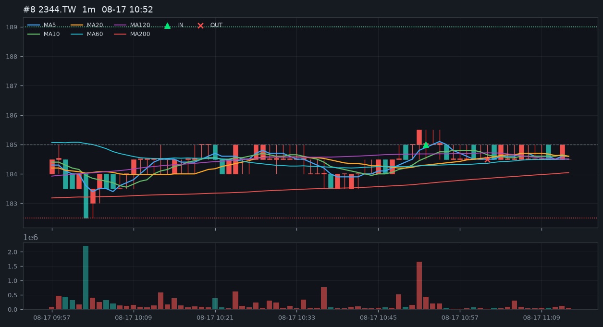
進場 179.50 停損 174.50 停利 187.00 出場 177.50 MA5 177.80 MA10 177.15 MA20 176.80 MA60 175.97 MA120 175.18 MA200 174.93 5–20 扇開 0.56% 離MA200 2.61% 量比 2.8x
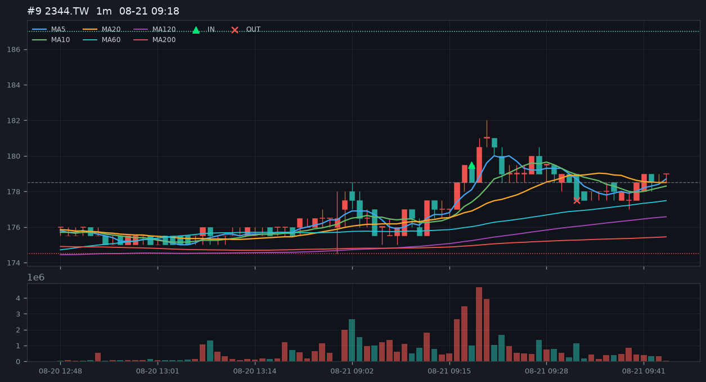
進場 179.50 停損 176.00 停利 185.00 出場 178.50 MA5 178.50 MA10 177.90 MA20 177.38 MA60 177.14 MA120 177.57 MA200 176.69 5–20 扇開 0.63% 離MA200 1.59% 量比 7.8x
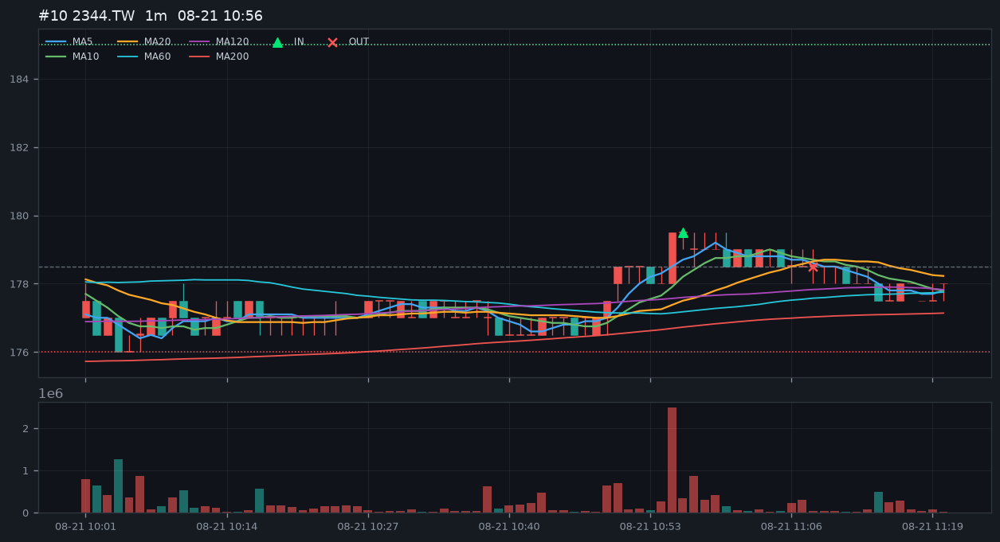
進場 180.50 停損 179.00 停利 183.00 出場 180.50 MA5 180.30 MA10 180.00 MA20 179.82 MA60 179.59 MA120 179.15 MA200 178.49 5–20 扇開 0.26% 離MA200 1.41% 量比 3.7x
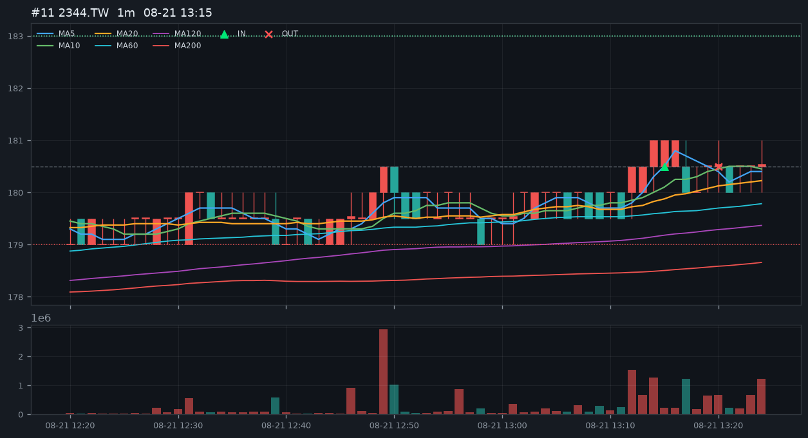
進場 116.50 停損 114.50 停利 119.50 出場 116.00 MA5 115.80 MA10 115.65 MA20 115.45 MA60 115.14 MA120 114.90 MA200 114.53 5–20 扇開 0.30% 離MA200 2.16% 量比 3.5x
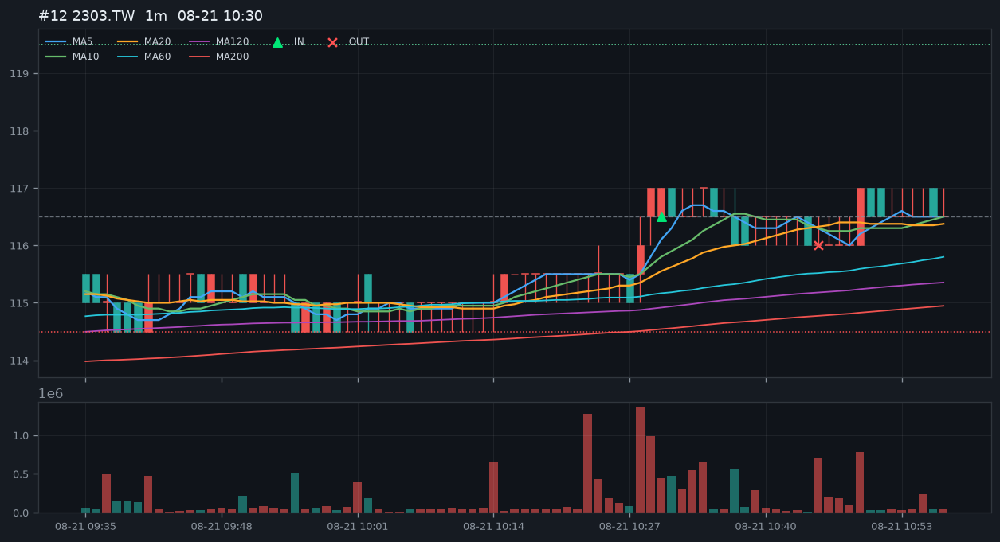
進場 2385.00 停損 2355.00 停利 2430.00 出場 2385.00 MA5 2377.00 MA10 2374.50 MA20 2373.25 MA60 2365.33 MA120 2361.50 MA200 2359.07 5–20 扇開 0.16% 離MA200 1.10% 量比 2.1x
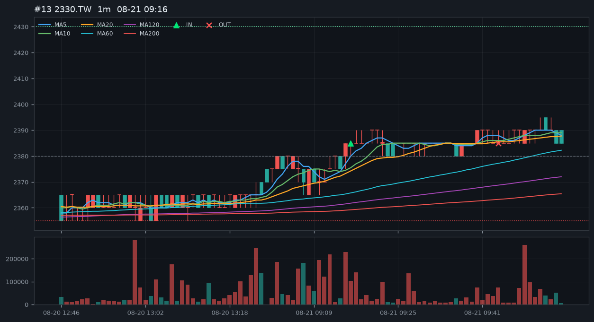
進場 29701.00 停損 29502.25 停利 29999.00 出場 29709.00 MA5 29678.35 MA10 29667.25 MA20 29625.45 MA60 29569.11 MA120 29554.31 MA200 29551.42 5–20 扇開 0.18% 離MA200 0.50% 量比 1.6x
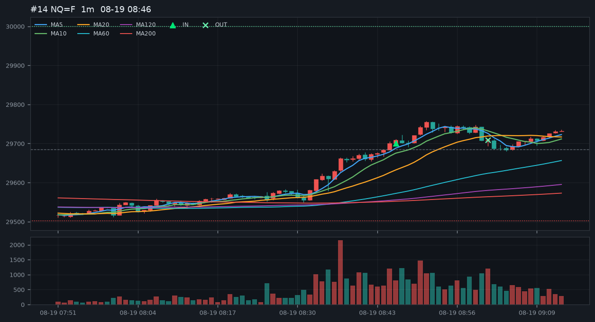
進場 29454.00 停損 29255.25 停利 29752.00 出場 29446.75 MA5 29428.90 MA10 29411.15 MA20 29383.71 MA60 29347.43 MA120 29320.14 MA200 29383.33 5–20 扇開 0.15% 離MA200 0.24% 量比 1.9x
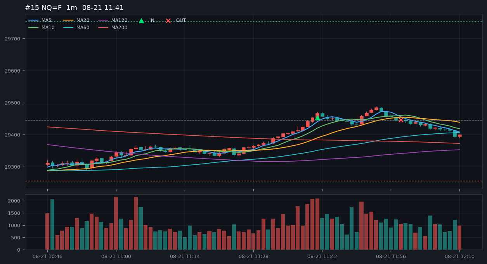